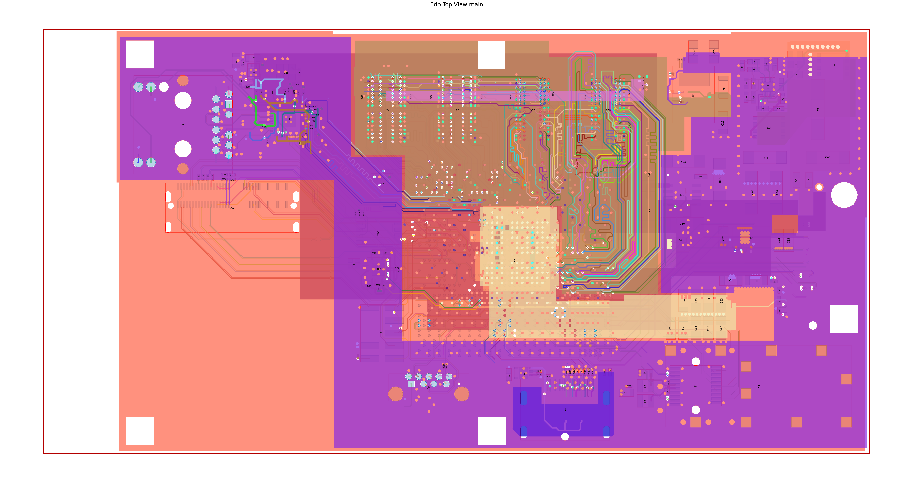
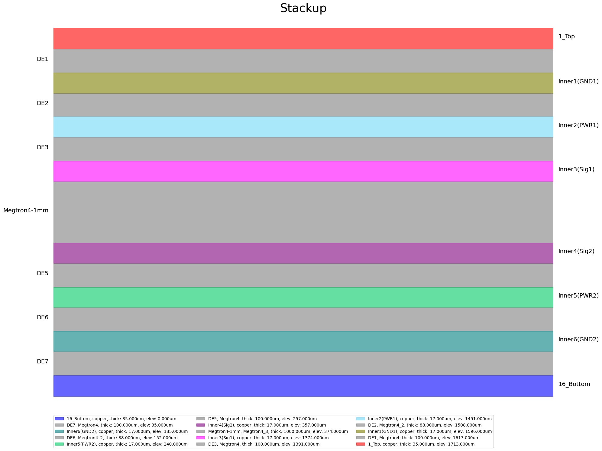
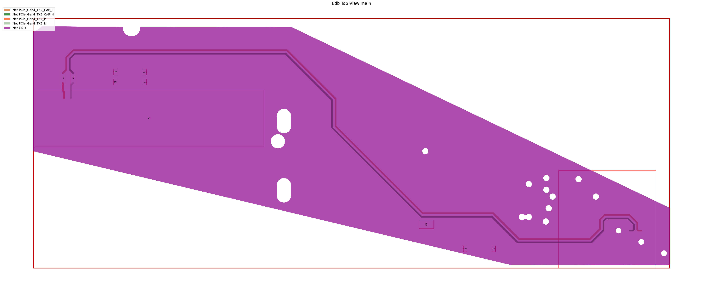
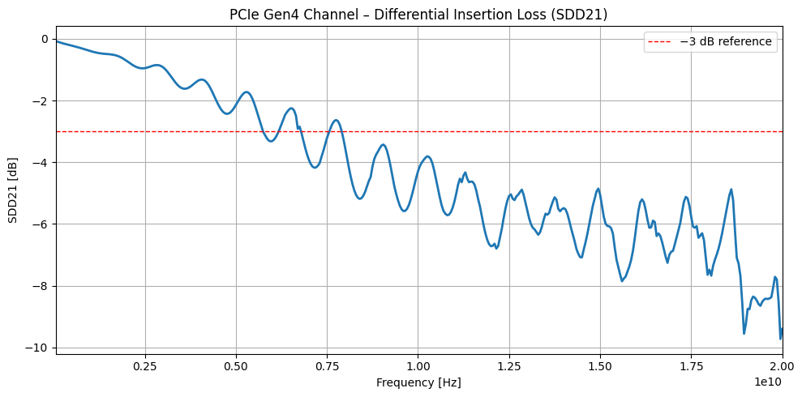

Download this example
Download this example as a Jupyter Notebook or as a Python script.
PCB Signal Integrity Analysis Using PyEDB#
This example demonstrates a complete end-to-end PCB signal integrity workflow:
Load an existing high-speed digital PCB layout from an EDB file.
Explore the board—inspect the stackup, nets, and components.
Configure the design using a single JSON file: update stackup materials with frequency-dependent properties and surface roughness models, assign measured S-parameter data to decoupling capacitors, create coaxial ports on the IC and circuit ports on the connector, backdrill via stubs, define a focused design cutout, and set up a SIwave AC analysis.
Apply the configuration and visualize the result.
Open the configured EDB in HFSS 3D Layout, assign differential pairs, and run the SIwave solver.
Post-process and plot the differential insertion loss (SDD21) for the PCIe Gen4 channel.
Keywords: EDB, PyEDB, signal integrity, SIwave, HFSS 3D Layout, PCIe, differential pairs, S-parameters
Prerequisites#
Perform imports#
[1]:
import json
import os
import tempfile
import time
import matplotlib.pyplot as plt
from ansys.aedt.core import Hfss3dLayout
from ansys.aedt.core.examples.downloads import download_file
from pyedb import Edb
Define constants#
Constants help ensure consistency and avoid repetition throughout the example.
[2]:
AEDT_VERSION = "2025.2"
NUM_CORES = 4
NG_MODE = False # Open AEDT UI when it is launched.
Create temporary directory#
Create a temporary working directory. The name of the working folder is stored in temp_folder.name.
Note: The final cell in the notebook cleans up the temporary folder. If you want to retrieve the AEDT project and data, do so before executing the final cell in the notebook.
[3]:
temp_folder = tempfile.TemporaryDirectory(suffix=".ansys")
Download example PCB layout#
Download the ANSYS high-speed digital (HSD) PCB reference design. This 16-layer board includes DDR4 and PCIe Gen4 interfaces, a multi-layer copper/dielectric stackup, decoupling capacitors, and a BGA IC (U1) connected to an edge connector (X1).
A measured S-parameter file for the decoupling capacitor is also downloaded.
Note: For execution of this example on your local machine, you may download or clone the example-data repo and add the following lines so that files for this example are copied from that local source.
from ansys.aedt.core import settings
settings.use_local_example_data = True
settings.local_example_folder = r'/path/to/local/example-data'
[4]:
file_edb = download_file(source="pyaedt/edb/ANSYS-HSD_V1.aedb", local_path=temp_folder.name)
[5]:
download_file(
source="touchstone",
name="GRM32_DC0V_25degC_series.s2p",
local_path=os.path.dirname(file_edb),
)
[5]:
'C:\\Users\\ansys\\AppData\\Local\\Temp\\tmpn67q42x0.ansys\\pyaedt\\edb\\pyaedt\\touchstone\\GRM32_DC0V_25degC_series.s2p'
Explore the PCB Layout#
Open the PCB as an Edb instance and inspect the stackup, nets, and components. This is useful for identifying the layer names, net names, and component reference designators that will be referenced later in the configuration.
[6]:
edbapp = Edb(edbpath=file_edb, version=AEDT_VERSION)
PyEDB INFO: Star initializing Edb 05:06:10.449085
PyEDB INFO: Edb version 2025.2
PyEDB INFO: Logger is initialized. Log file is saved to C:\Users\ansys\AppData\Local\Temp\pyedb_ansys.log.
PyEDB INFO: legacy v0.71.0
PyEDB INFO: Python version 3.10.11 (tags/v3.10.11:7d4cc5a, Apr 5 2023, 00:38:17) [MSC v.1929 64 bit (AMD64)]
PyEDB INFO: Database ANSYS-HSD_V1.aedb Opened in 2025.2
PyEDB INFO: Cell main Opened
PyEDB INFO: Builder was initialized.
PyEDB INFO: open_edb completed in 9.5496 seconds.
PyEDB INFO: EDB initialization completed in 9.6605 seconds.
Inspect the stackup#
List all layers with their type and thickness. Layer names returned here are used verbatim in the stackup.layers section of the configuration dictionary.
[7]:
print("Stackup layers:")
for name, layer in edbapp.stackup.layers.items():
print(f" '{name}': type={layer.type}, thickness={layer.thickness*1E6:.1f} µm")
print("--------------------------------------------")
Stackup layers:
'1_Top': type=signal, thickness=35.0 µm
--------------------------------------------
'DE1': type=dielectric, thickness=100.0 µm
--------------------------------------------
'Inner1(GND1)': type=signal, thickness=17.0 µm
--------------------------------------------
'DE2': type=dielectric, thickness=88.0 µm
--------------------------------------------
'Inner2(PWR1)': type=signal, thickness=17.0 µm
--------------------------------------------
'DE3': type=dielectric, thickness=100.0 µm
--------------------------------------------
'Inner3(Sig1)': type=signal, thickness=17.0 µm
--------------------------------------------
'Megtron4-1mm': type=dielectric, thickness=1000.0 µm
--------------------------------------------
'Inner4(Sig2)': type=signal, thickness=17.0 µm
--------------------------------------------
'DE5': type=dielectric, thickness=100.0 µm
--------------------------------------------
'Inner5(PWR2)': type=signal, thickness=17.0 µm
--------------------------------------------
'DE6': type=dielectric, thickness=88.0 µm
--------------------------------------------
'Inner6(GND2)': type=signal, thickness=17.0 µm
--------------------------------------------
'DE7': type=dielectric, thickness=100.0 µm
--------------------------------------------
'16_Bottom': type=signal, thickness=35.0 µm
--------------------------------------------
Inspect nets and components#
[8]:
print(f"\nTotal nets : {len(edbapp.nets.netlist)}")
print(f"Total components: {len(edbapp.components.instances)}")
Total nets : 348
Total components: 509
Print the reference designator, part number and connected net names for components. Select only the first component instance for inductors “L”, capacitors “C” and the BGA “U”.
Count the types of components in the PCB.
[9]:
resistors = {k: v for k, v in edbapp.components.instances.items() if k.lower().startswith("r")}
caps = {k: v for k, v in edbapp.components.instances.items() if k.lower().startswith("c")}
ics = {k: v for k, v in edbapp.components.instances.items() if k.lower().startswith("u")}
print(f"There are {len(resistors)} resistors, {len(caps)} capacitors and {len(ics)} IC's.")
There are 82 resistors, 380 capacitors and 14 IC's.
Print the reference designator and number of pins for each IC.
[10]:
for refdes, comp in ics.items():
s = f"{refdes} has {comp.numpins} pins and is on layer '{comp.placement_layer}'."
print(s)
U13 has 25 pins and is on layer '1_Top'.
U11 has 11 pins and is on layer '1_Top'.
U10 has 4 pins and is on layer '1_Top'.
U8 has 9 pins and is on layer '1_Top'.
U4 has 39 pins and is on layer '1_Top'.
U3 has 69 pins and is on layer '1_Top'.
U2 has 77 pins and is on layer '16_Bottom'.
U1 has 1517 pins and is on layer '1_Top'.
U6 has 96 pins and is on layer '1_Top'.
U9 has 49 pins and is on layer '1_Top'.
U12 has 24 pins and is on layer '1_Top'.
U15 has 96 pins and is on layer '1_Top'.
U7 has 96 pins and is on layer '1_Top'.
U14 has 96 pins and is on layer '1_Top'.
The BGA is component "U1" which is an instance of the EDBComponent class.
Print the bounding box \((x,y)\) coordinates for "U1". > Note: Lateral > dimensions are in mm.
[11]:
refdes = "U1"
x1, y1, x2, y2 = ics[refdes].bounding_box
print_str = f'"{refdes}" bounding box:\n'
print_str += f" (x={x1*1000:.2f}mm, y={y1*1000:.2f}mm) lower left\n"
print_str += f" (x={x2*1000:.2f}mm, y={y2*1000:.2f}mm) upper right."
print(print_str)
"U1" bounding box:
(x=60.25mm, y=14.75mm) lower left
(x=98.75mm, y=53.25mm) upper right.
Information about the device pin connections can be accessed through the pins property.
[12]:
ground_pins = [pin for pin, pin_instance in ics[refdes].pins.items() if pin_instance.net.name == "GND"]
print(f'Component "{refdes}" has {len(ground_pins)} pins connected to the net "GND".')
Component "U1" has 403 pins connected to the net "GND".
Visualize the full board#
Plot all nets color-coded by net name to view the copper coverage.
[13]:
edbapp.nets.plot(None, color_by_net=True, show_legend=False)

PyEDB INFO: Plot Generation time 39.908
[13]:
(<Figure size 6000x3000 with 1 Axes>,
<Axes: title={'center': 'Edb Top View main'}>)
Plot the PCB stackup cross-section showing layer thicknesses and materials.
[14]:
edbapp.stackup.plot()

[14]:
<module 'matplotlib.pyplot' from 'C:\\actions-runner\\_work\\pyaedt-examples\\pyaedt-examples\\.venv\\lib\\site-packages\\matplotlib\\pyplot.py'>
Model Preparation#
All EDB simulation settings are expressed as a Python dictionary that is serialized to a JSON file. The edb.configuration API loads this file and applies every setting in a single run() call.
Each subsection below builds one key of the configuration dictionary and explains the relevant API keywords.
General settings#
anti_pads_always_on: Keep anti-pads (clearances around vias) visible at all frequencies. This improves accuracy for high-frequency broadband analysis.
suppress_pads: Remove floating pads on layers where the padstack is not connected. This reduces mesh complexity without affecting electrical results.
s_parameter_library: Root folder for S-parameter files referenced by relative path in the
s_parameterssection.
[15]:
cfg_general = {
"anti_pads_always_on": True,
"suppress_pads": True,
"s_parameter_library": os.path.join(os.path.dirname(file_edb), "touchstone"),
}
Update stackup materials#
Replace default material assignments with accurate, frequency-dependent values. Panasonic Megtron4 is a common high-performance PCB laminate used in server and networking boards.
Surface roughness significantly affects insertion loss above ~5 GHz. The Huray model describes copper roughness using a sphere-on-a-plane geometric approximation defined by the nodule radius and the ratio of rough surface area to the ideal flat area.
Keywords for layers:
name: Must match the layer name in the EDB exactly (see stackup inspection above).
type:
signalfor copper layers,dielectricfor insulating layers.material: Conductor or dielectric material name (defined in
materials).fill_material: Dielectric fill between traces on signal layers.
thickness: Layer thickness as a string with units or as a float in meters.
roughness.model: Surface roughness model.
hurayis recommended for high-frequency PCB analysis.roughness.nodule_radius: Average radius of copper nodules.
roughness.surface_ratio: Ratio of rough to flat surface area (dimensionless).
roughness.enabled: Set to
Trueto activate the roughness model.
[16]:
cfg_stackup = {
"materials": [
{"name": "copper", "permittivity": 1.0, "conductivity": 58000000.0},
{"name": "megtron4", "permittivity": 3.77, "dielectric_loss_tangent": 0.005},
{"name": "solder_resist", "permittivity": 3.0, "dielectric_loss_tangent": 0.035},
],
"layers": [
{
"name": "Top",
"type": "signal",
"material": "copper",
"fill_material": "solder_resist",
"thickness": "0.035mm",
"roughness": {
"top": {"model": "huray", "nodule_radius": "0.5um", "surface_ratio": "5"},
"bottom": {"model": "huray", "nodule_radius": "0.5um", "surface_ratio": "5"},
"side": {"model": "huray", "nodule_radius": "0.5um", "surface_ratio": "5"},
"enabled": True,
},
},
{"name": "DE1", "type": "dielectric", "material": "megtron4", "fill_material": "", "thickness": "0.1mm"},
{"name": "Inner1", "type": "signal", "material": "copper", "fill_material": "megtron4", "thickness": "0.017mm"},
{"name": "DE2", "type": "dielectric", "material": "megtron4", "fill_material": "", "thickness": "0.088mm"},
{"name": "Inner2", "type": "signal", "material": "copper", "fill_material": "megtron4", "thickness": "0.017mm"},
{"name": "DE3", "type": "dielectric", "material": "megtron4", "fill_material": "", "thickness": "0.1mm"},
{"name": "Inner3", "type": "signal", "material": "copper", "fill_material": "megtron4", "thickness": "0.017mm"},
{"name": "Megtron4-1mm", "type": "dielectric", "material": "megtron4", "fill_material": "", "thickness": "1mm"},
{"name": "Inner4", "type": "signal", "material": "copper", "fill_material": "megtron4", "thickness": "0.017mm"},
{"name": "DE5", "type": "dielectric", "material": "megtron4", "fill_material": "", "thickness": "0.1mm"},
{"name": "Inner5", "type": "signal", "material": "copper", "fill_material": "megtron4", "thickness": "0.017mm"},
{"name": "DE6", "type": "dielectric", "material": "megtron4", "fill_material": "", "thickness": "0.088mm"},
{"name": "Inner6", "type": "signal", "material": "copper", "fill_material": "megtron4", "thickness": "0.017mm"},
{"name": "DE7", "type": "dielectric", "material": "megtron4", "fill_material": "", "thickness": "0.1mm"},
{
"name": "Bottom",
"type": "signal",
"material": "copper",
"fill_material": "solder_resist",
"thickness": "0.035mm",
},
],
}
Configure the IC component#
U1 is the host IC in BGA packaging. Assigning solder ball geometry enables the configuration framework to automatically create coaxial wave ports on each ball connected to the specified nets.
Keywords:
reference_designator: Reference designator of the component in the EDB.
part_type:
iofor IC drivers/receivers,otherfor generic components.solder_ball_properties.shape: Solder ball cross-section,
cylinderorsphere.solder_ball_properties.diameter / height: Geometry of the solder ball.
port_properties.reference_size_auto: When
True, the reference plane size is computed automatically from the pitch and ball diameter.
[17]:
cfg_components = [
{
"reference_designator": "U1",
"part_type": "io",
"solder_ball_properties": {
"shape": "cylinder",
"diameter": "300um",
"height": "300um",
},
"port_properties": {
"reference_offset": "0",
"reference_size_auto": True,
"reference_size_x": 0,
"reference_size_y": 0,
},
}
]
Assign measured S-parameter models to decoupling capacitors#
Measured Touchstone® data captures real-world parasitic effects (ESL, ESR, self-resonance) that ideal RLC models cannot represent. This is especially important for decoupling capacitors in a PDN-aware S-parameter analysis.
Keywords:
name: Label for this S-parameter assignment in the AEDT project.
component_definition: Part number that identifies which component type receives this model.
file_path: Touchstone file path, relative to
general.s_parameter_library.apply_to_all: When
False, only the components listed incomponentsreceive the model; all others of the same part type keep their default model.components: Specific reference designators to assign when
apply_to_allisFalse.reference_net: Net used as the ground reference for the S-parameter model.
[18]:
cfg_s_parameters = [
{
"name": "cap_10nf",
"component_definition": "CAPC1005X55X25LL05T10",
"file_path": "GRM32_DC0V_25degC_series.s2p",
"apply_to_all": True,
"components": ["C375", "C376"],
"reference_net": "GND",
}
]
Define ports#
Create one coaxial port per differential net at the IC (“U1”) end, and one circuit port per differential pair at the connector (“X1”) end. The resulting 4-port model is comprised of two ports at each end of the the PCIe channel.
Keywords:
type:
coaxcreates a cylindrical wave port around the solder ball.circuitcreates a lumped port between two specified terminals.positive_terminal.net: For a coax port, the net specifies which solder ball on the component is assigned to the port.
positive_terminal.pin / negative_terminal.pin: For a circuit port, specify the exact pin names (as printed on the component).
[19]:
cfg_ports = [
# IC-side coaxial ports on the PCIe Gen4 TX differential pair.
{
"name": "port_U1_p",
"reference_designator": "U1",
"type": "coax",
"positive_terminal": {"net": "PCIe_Gen4_TX2_CAP_P"},
},
{
"name": "port_U1_n",
"reference_designator": "U1",
"type": "coax",
"positive_terminal": {"net": "PCIe_Gen4_TX2_CAP_N"},
},
# Connector-side circuit ports on the mating edge connector (X1).
{
"name": "port_X1_p",
"reference_designator": "X1",
"type": "circuit",
"positive_terminal": {"pin": "B8"},
"negative_terminal": {"pin": "B7"},
},
{
"name": "port_X1_n",
"reference_designator": "X1",
"type": "circuit",
"positive_terminal": {"pin": "B9"},
"negative_terminal": {"pin": "B10"},
},
]
Configure via backdrills#
Via stubs—the unused portion of a through-hole via below the last active layer—can act as quarter-wave resonators and cause sharp cutouts in insertion loss at high frequency. Backdrilling removes these stubs after PCB fabrication.
Keywords for instances:
name: Via instance name as it appears in the EDB.
backdrill_parameters.from_bottom.drill_to_layer: Deepest layer reached by the backdrilled hole (stub is the portion from this layer to the bottom).
backdrill_parameters.from_bottom.diameter: Diameter of the backdrill bit.
backdrill_parameters.from_bottom.stub_length: Remaining stub length after drilling, accounting for tool tolerance.
[20]:
cfg_padstacks = {
"definitions": [
{
"name": "v40h15-2",
"material": "copper",
"hole_range": "upper_pad_to_lower_pad",
"hole_parameters": {"shape": "circle", "diameter": "0.2mm"},
},
{
"name": "v35h15-1",
"material": "copper",
"hole_range": "upper_pad_to_lower_pad",
"hole_parameters": {"shape": "circle", "diameter": "0.25mm"},
},
],
"instances": [
{
"name": "Via313",
"backdrill_parameters": {
"from_bottom": {
"drill_to_layer": "Inner3",
"diameter": "1mm",
"stub_length": "0.2mm",
}
},
},
{
"name": "Via314",
"backdrill_parameters": {
"from_bottom": {
"drill_to_layer": "Inner3",
"diameter": "1mm",
"stub_length": "0.2mm",
}
},
},
],
}
Define the analysis setup#
Use a SIwave AC setup for full-wave S-parameter extraction from 50 MHz to 20 GHz. This range covers PCIe Gen4 (16 GT/s, Nyquist frequency ~8 GHz) and higher harmonics that affect eye opening and jitter.
Keywords:
type:
siwave_acfor SIwave SYZ analysis;hfssfor full-wave HFSS.si_slider_position: Controls the accuracy-vs-speed trade-off.
0= speed,1= balanced (recommended),2= accuracy.freq_sweep.type:
interpolationuses adaptive frequency sampling and is faster thandiscretefor smooth S-parameter curves.frequencies.distribution:
linear_scaleplaces points uniformly in frequency;log_scaleis preferred for PDN impedance plots.
[21]:
cfg_setups = [
{
"name": "siwave_ac",
"type": "siwave_ac",
"si_slider_position": 1,
"freq_sweep": [
{
"name": "Sweep1",
"type": "interpolation",
"frequencies": [
{
"distribution": "linear_scale",
"start": "50MHz",
"stop": "20GHz",
"increment": "50MHz",
}
],
}
],
}
]
Define the design cutout#
Trim the board to the region containing the PCIe channel. The cutout removes all copper and dielectric outside the specified polygon, reducing the required compute resources while retaining the relevant transmission lines, vias, return-path planes, and decoupling capacitors.
Keywords:
signal_list: Nets that must be fully retained inside the cutout boundary.
reference_list: Reference plane nets (typically
GND) that follow the signal boundary with their own expansion.custom_extent: Polygon vertices
[x_m, y_m]in meters that define a user-drawn cutout boundary. When omitted, useextent_typeto choose an automatic bounding algorithm (ConvexHull,Conforming,Bounding).
[22]:
cfg_operations = {
"cutout": {
"signal_list": [
"PCIe_Gen4_TX2_CAP_P",
"PCIe_Gen4_TX2_CAP_N",
"PCIe_Gen4_TX2_P",
"PCIe_Gen4_TX2_N",
],
"reference_list": ["GND"],
"custom_extent": [
[0.014, 0.055],
[0.03674271504652968, 0.05493094625752912],
[0.07, 0.039],
[0.07, 0.034],
[0.05609890516829415, 0.03395233061637539],
[0.014, 0.044],
],
}
}
Assemble configuration dictionary and write to a JSON file#
[23]:
cfg = {
"general": cfg_general,
"stackup": cfg_stackup,
"components": cfg_components,
"padstacks": cfg_padstacks,
"ports": cfg_ports,
"s_parameters": cfg_s_parameters,
"setups": cfg_setups,
"operations": cfg_operations,
}
file_json = os.path.join(temp_folder.name, "edb_configuration.json")
with open(file_json, "w") as f:
json.dump(cfg, f, indent=4, ensure_ascii=False)
Apply configuration to EDB#
configuration.load() reads the JSON file. configuration.run() applies every section to the open EDB in the correct dependency order (stackup → components → padstacks → ports → sources → setups → cutout).
[24]:
edbapp.configuration.load(config_file=file_json)
edbapp.configuration.run()
PyEDB INFO: Updating nets finished. Time lapse 0:00:00
PyEDB INFO: Updating components finished. Time lapse 0:00:00.031498
PyEDB INFO: Creating pin groups finished. Time lapse 0:00:00
PyEDB INFO: Placing sources finished. Time lapse 0:00:00
PyEDB INFO: Applying materials finished. Time lapse 0:00:00.015908
PyEDB INFO: Updating stackup finished. Time lapse 0:00:15.746109
PyEDB INFO: Applying padstack definitions and instances completed in 1.0113 seconds.
PyEDB INFO: Applying S-parameters finished. Time lapse 0:00:00.031676
PyEDB INFO: Applying package definitions finished. Time lapse 0:00:00
PyEDB INFO: Applying modeler finished. Time lapse 0:00:00
PyEDB INFO: Placing ports finished. Time lapse 0:00:00.648636
PyEDB INFO: Placing terminals completed in 0.0000 seconds.
PyEDB INFO: Placing probes finished. Time lapse 0:00:00
PyEDB INFO: -----------------------------------------
PyEDB INFO: Trying cutout with (0.002)*(1000.0)mm expansion size
PyEDB INFO: -----------------------------------------
PyEDB INFO: Cutout Multithread started.
PyEDB INFO: Net clean up Elapsed time: 0m 2sec
PyEDB INFO: Extent Creation Elapsed time: 0m 0sec
PyEDB INFO: 1949 Padstack Instances deleted. Elapsed time: 0m 1sec
PyEDB INFO: 443 Primitives deleted. Elapsed time: 0m 5sec
PyEDB INFO: 980 components deleted
PyEDB INFO: Cutout completed. Elapsed time: 0m 8sec
PyEDB INFO: EDB file save completed in 0.0816 seconds.
PyEDB INFO: Cutout completed in 1 iterations with expansion size of (0.002)*(1000.0)mm Elapsed time: 0m 8sec
PyEDB INFO: Applying operations completed in 8.4095 seconds.
PyEDB WARNING: sweep_type parameter is deprecated. Use ``discrete`` parameter instead
PyEDB INFO: Applying setups completed in 0.5856 seconds.
[24]:
True
Visualize the cutout result#
Plot the extracted channel region to confirm that all signal nets and the surrounding ground planes were retained correctly.
[25]:
edbapp.nets.plot(
nets=[
"PCIe_Gen4_TX2_CAP_P",
"PCIe_Gen4_TX2_CAP_N",
"PCIe_Gen4_TX2_P",
"PCIe_Gen4_TX2_N",
"GND",
],
color_by_net=True,
)

PyEDB INFO: Plot Generation time 0.984
[25]:
(<Figure size 6000x3000 with 1 Axes>,
<Axes: title={'center': 'Edb Top View main'}>)
Save and close EDB#
[26]:
edbapp.save()
edbapp.close()
PyEDB INFO: Save Edb file completed in 0.0791 seconds.
PyEDB INFO: Close Edb file completed in 0.2059 seconds.
[26]:
True
Simulate in HFSS 3D Layout#
Open the configured EDB directly in HFSS 3D Layout to drive the SIwave solver. The same AEDB file is used—no import or conversion step is needed.
[27]:
h3d = Hfss3dLayout(
edbapp.edbpath,
version=AEDT_VERSION,
non_graphical=NG_MODE,
new_desktop=True,
)
PyAEDT INFO: Python version 3.10.11 (tags/v3.10.11:7d4cc5a, Apr 5 2023, 00:38:17) [MSC v.1929 64 bit (AMD64)].
PyAEDT INFO: PyAEDT version 0.26.dev0.
PyAEDT INFO: Initializing new Desktop session.
PyAEDT INFO: AEDT version 2025.2.
PyAEDT INFO: New AEDT session is starting on gRPC port 64748.
PyAEDT INFO: Starting new AEDT gRPC session on port 64748.
PyAEDT INFO: Launching AEDT server with gRPC transport mode: wnua
PyAEDT INFO: Electronics Desktop started on gRPC port 64748 after 11.5 seconds.
PyAEDT INFO: AEDT installation Path C:\Program Files\ANSYS Inc\v252\AnsysEM
PyAEDT INFO: Connected to AEDT gRPC session on port 64748.
PyAEDT WARNING: Service Pack is not detected. PyAEDT is currently connecting in Insecure Mode.
PyAEDT WARNING: Please download and install latest Service Pack to use connect to AEDT in Secure Mode.
PyAEDT INFO: EDB folder C:\Users\ansys\AppData\Local\Temp\tmpn67q42x0.ansys\pyaedt\edb\ANSYS-HSD_V1.aedb has been imported to project ANSYS-HSD_V1
PyAEDT INFO: Active Design set to 0;main
PyAEDT INFO: AEDT objects correctly read
Defining differential pairs#
Map the four single-ended ports defined in the EDB to two mixed-mode ports. HFSS 3D Layout and SIwave use these definitions to compute differential (SDD) and common-mode (SCC) S-parameters.
differential_mode: Name of the mixed-mode port (used in result expressions).
assignment: The positive (P) single-ended port name.
reference: The negative (N) single-ended port name.
[28]:
h3d.set_differential_pair(
differential_mode="DIFF_U1",
assignment="port_U1_p",
reference="port_U1_n",
)
[28]:
True
[29]:
h3d.set_differential_pair(
differential_mode="DIFF_X1",
assignment="port_X1_p",
reference="port_X1_n",
)
[29]:
True
Run the analysis#
[30]:
h3d.analyze(setup="siwave_ac")
PyAEDT INFO: Project ANSYS-HSD_V1 Saved correctly
PyAEDT INFO: Solving design setup siwave_ac
PyAEDT INFO: Design setup siwave_ac solved correctly in 0.0h 0.0m 52.0s
[30]:
True
Postprocess#
Extract the mixed-mode S-parameter solution data and plot the differential insertion loss SDD21. For a PCIe Gen4 channel this should be better than −3 dB up to the Nyquist frequency (~8 GHz) to meet the channel operating margin (COM) specification.
Retrieve solution data#
[31]:
solutions = h3d.post.get_solution_data(
expressions="mag(S(DIFF_X1,DIFF_U1))",
context="Differential Pairs",
)
PyAEDT INFO: Parsing C:\Users\ansys\AppData\Local\Temp\tmpn67q42x0.ansys\pyaedt\edb\ANSYS-HSD_V1.aedt.
PyAEDT INFO: File C:\Users\ansys\AppData\Local\Temp\tmpn67q42x0.ansys\pyaedt\edb\ANSYS-HSD_V1.aedt correctly loaded. Elapsed time: 0m 0sec
PyAEDT INFO: aedt file load time 0.4583590030670166
PyAEDT INFO: PostProcessor class has been initialized! Elapsed time: 0m 1sec
PyAEDT INFO: Post class has been initialized! Elapsed time: 0m 1sec
PyAEDT INFO: Loading Modeler.
PyAEDT INFO: Modeler loaded.
PyAEDT INFO: Modeler class has been initialized! Elapsed time: 0m 0sec
PyAEDT INFO: No EDB gRPC setting provided. Disabling gRPC for EDB.
PyAEDT INFO: Loading EDB with Dotnet enabled.
PyEDB INFO: Star initializing Edb 05:09:05.411223
PyEDB INFO: Edb version 2025.2
PyEDB INFO: Logger is initialized. Log file is saved to C:\Users\ansys\AppData\Local\Temp\pyedb_ansys.log.
PyEDB INFO: legacy v0.71.0
PyEDB INFO: Python version 3.10.11 (tags/v3.10.11:7d4cc5a, Apr 5 2023, 00:38:17) [MSC v.1929 64 bit (AMD64)]
PyEDB INFO: Database ANSYS-HSD_V1.aedb Opened in 2025.2
PyEDB INFO: Cell main Opened
PyEDB INFO: Builder was initialized.
PyEDB INFO: open_edb completed in 0.1199 seconds.
PyEDB INFO: EDB initialization completed in 0.1424 seconds.
PyAEDT INFO: Solution Correctly loaded. Elapsed time: 0m 0sec
PyAEDT INFO: Solution Correctly parsed. Elapsed time: 0m 0sec
Plot differential insertion loss (SDD21)#
[32]:
plot_data = solutions.get_expression_data(convert_to_SI=True, formula="db20")
freq, sdd21_db = plot_data
[33]:
plt.figure(figsize=(10, 5))
plt.plot(freq, sdd21_db, linewidth=2)
plt.axhline(y=-3, color="r", linestyle="--", linewidth=1, label="−3 dB reference")
plt.title("PCIe Gen4 Channel – Differential Insertion Loss (SDD21)")
plt.xlabel("Frequency [Hz]")
plt.ylabel("SDD21 [dB]")
plt.xlim([min(freq), max(freq)])
plt.grid(True)
plt.legend()
plt.tight_layout()
plt.show()

Finish#
Save the project#
[34]:
h3d.save_project()
h3d.release_desktop()
# Wait 3 seconds to allow AEDT to shut down before cleaning the temporary directory.
time.sleep(3)
PyAEDT INFO: Project ANSYS-HSD_V1 Saved correctly
PyAEDT INFO: Desktop has been released and closed.
Clean up#
All project files are saved in the folder temp_folder.name. If you’ve run this example as a Jupyter notebook, you can retrieve those project files. The following cell removes all temporary files, including the project folder.
[35]:
temp_folder.cleanup()
Download this example
Download this example as a Jupyter Notebook or as a Python script.